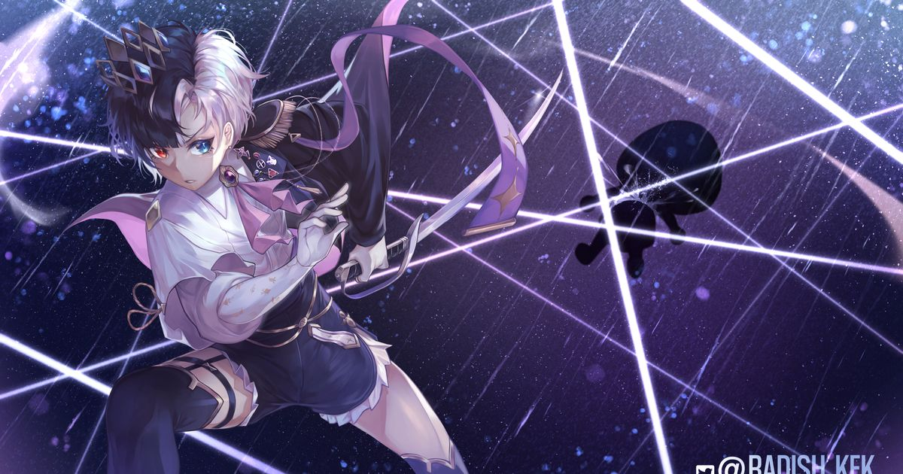
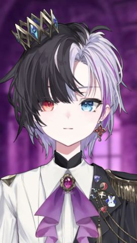
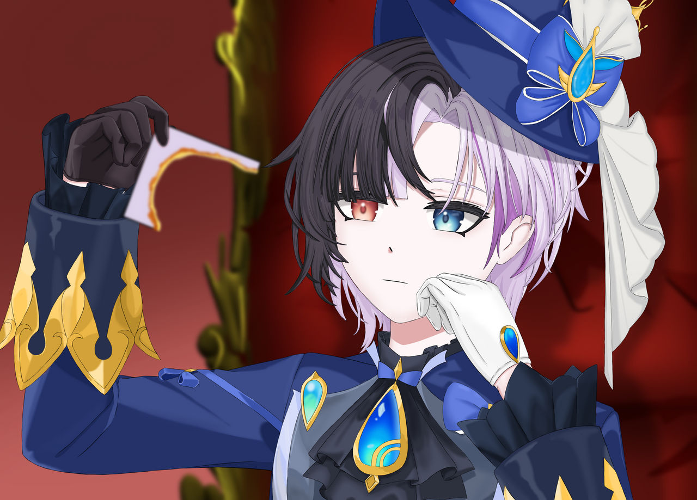
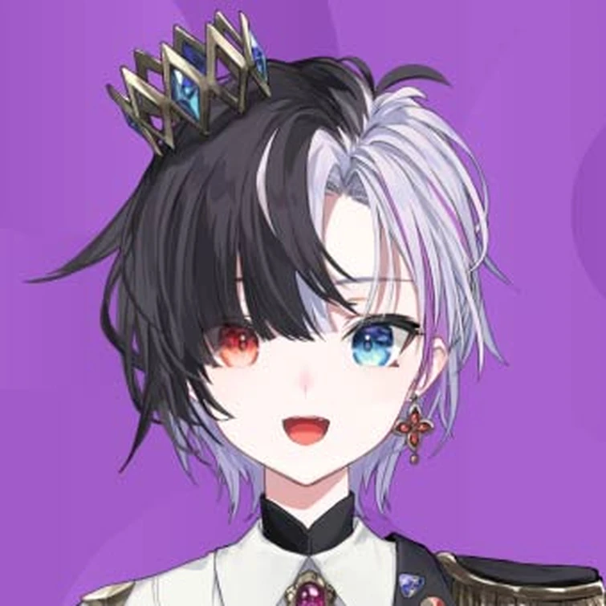

Rin Penrose Rin Penrose is a female English VTuber once affiliated with Idol Corp's first English generation "E-Sekai" alongside Yuko Yurei, Juna Unagi, Pochi Wanmaru, and Fuyo Cloverfield. In December 2024, "E-Sekai" became independent after Idol's acquisition by Brave Group US.
Official Background Rin is a mature person for whom elegance (but also money) matters a lot. Thus, she often puts in relief that her viewers must behave making honour to her by various fancy requests. Her genmate Fuyo Cloverfield refers to her as a tsundere. She is regularly taken as a clown by everyone else, even her genmates, due to both her behavior and her strong British accent. Rin resorts to sarcasm to make her discourse dynamic. Moreover, high speech speed is a trait put in relief in her YouTube shorts. Due to her reputation, she lacks authority over her chat. Once, it led to one of her streams, initially planned to be an announcement stream being interrupted continuously by the donation notification sound for 45 minutes. Then this stream turned, with the approbation of her manager, into one where she had to discuss with her mother. She is used to exposing her extravagant hobbies and opinions. For example, Rin likes talking a lot about her shark plushies she buys at Ikea. Rin also proudly extols she bases her streaming strategy not on doing her best, but making things as bad as possible, so she can distinguish herself from other streamers. Rin is a self-admitted girl failure who, despite being an adult, is unable to do basic chores like cooking or using the washing machine.    